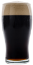

| Estilo | IBU | ABV | Especificaciones | |
|---|---|---|---|---|
| Blonde | 18 | 5,0% | Estilo de cerveza americana, de color dorado brillante, bien filtrada y cristalina. Aroma y sabor maltoso, levemente frutado. Suave y fácil de tomar debido a su simpleza y baja intensidad alcohólica. | |
| Scottish | 18 | 6,0% | De origen escocés, su color rojizo proveniene de las maltas especiales, que generan delicados aromas y sabores acaramelados desde el inicio hasta un final moderadamente seco, con leves notas tostadas. | |
|  | Porter | 18 | 6,0% | Cerveza nacida en los antiguos puertos londinenses, oscura con leves reflejos rubí y en la que la malta tostada tiene un gran protagonismo produciendo aromas y sabores que nos recuerdan a chocolate, café torrado y toffe. |